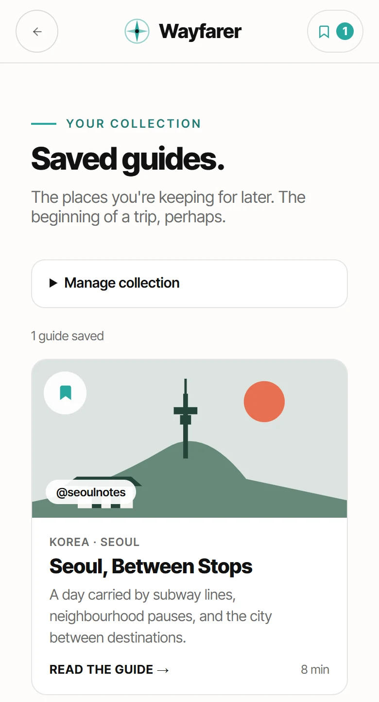
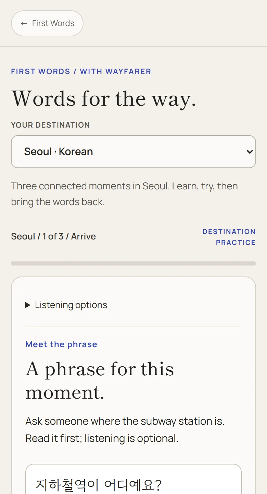

03 / INTERACTIVE SYSTEMS
Wayfarer.
A place is more than a pin.
Design & development · Portfolio concept

Find. Save. Practice.
01 / 02I connected editorial travel guides with saved places and First Words language practice, so a place can stay with you beyond its first impression.


A connected journey.
02 / 02Guides provide the context. A saved collection makes them easy to return to. Destination practice gives the next step a purpose.
Screens show an example journey through Seoul. Your own collection starts with the places you save.
TAKE A CLOSER LOOK
Explore Wayfarer Next pocket storyKarina →